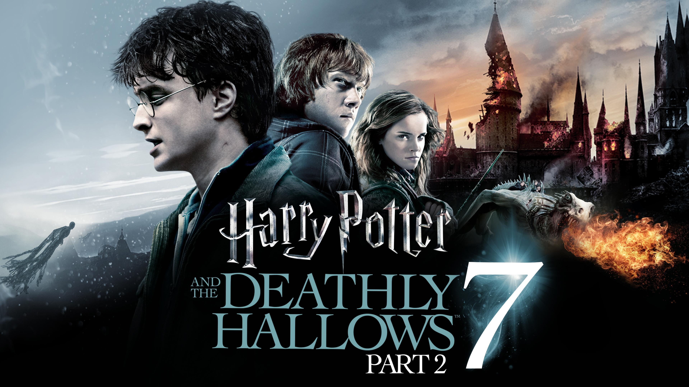

HARRY POTTER-THE PHILOSPHERS STONE
Harry Potter and the Philosopher's Stone (also known as Harry Potter and the Sorcerer's Stone) is a 2001 fantasy film directed by Chris Columbus and produced by David Heyman, from a screenplay by Steve Kloves, based on the 1997 novel of the same name by J. K. Rowling. It is the first instalment in the Harry Potter film series. The film stars Daniel Radcliffe as Harry Potter, with Rupert Grint as Ron Weasley, and Emma Watson as Hermione Granger. Its story follows Harry's first year at Hogwarts School of Witchcraft and Wizardry as he discovers that he is a famous wizard and begins his formal wizarding education. Warner Bros. Pictures bought the film rights to the book in 1999 for a reported £1 million ($1.65 million). Production began in the United Kingdom in 2000, with Columbus being chosen to helm the film from a short list of directors that included Steven Spielberg and Rob Reiner. Rowling insisted that the entire cast be British and Irish, with the three leads chosen in August 2000 following open casting calls. Filming took place at Leavesden Film Studios and historic buildings around the United Kingdom from September 2000 to March 2001. Harry Potter and the Philosopher's Stone was released to cinemas in the United Kingdom and Ireland on 10 and 11 November 2001 for two days of previews. The film opened on 16 November in the United States, Canada, and Taiwan as well as officially in the United Kingdom and Ireland. It became a critical and commercial success, grossing $974 million at the worldwide box office during its initial run, and over $1 billion with subsequent re-releases. It became the highest-grossing film of 2001 and the second-highest-grossing film at the time. The film was nominated for many awards, including Academy Awards for Best Original Score, Best Art Direction and Best Costume Design. It was followed by seven sequels, beginning with Harry Potter and the Chamber of Secrets in 2002 and ending with Harry Potter and the Deathly Hallows – Part 2 in 2011..

HARRY POTTER-CHAMBER OF SECRETS
Harry Potter and the Chamber of Secrets is a 2002 fantasy film directed by Chris Columbus from a screenplay by Steve Kloves, based on the 1998 novel of the same name by J. K. Rowling. Produced by David Heyman, it is the sequel to Harry Potter and the Philosopher's Stone (2001) and the second instalment in the Harry Potter film series. The film stars Daniel Radcliffe as Harry Potter, with Rupert Grint and Emma Watson as his best friends Ron Weasley and Hermione Granger respectively. The story follows Harry's second year at Hogwarts School of Witchcraft and Wizardry, where the Heir of Salazar Slytherin opens the Chamber of Secrets, unleashing a monster that petrifies the school's students. The film was released in the United Kingdom and the United States on 15 November 2002, by Warner Bros. Pictures. Critics praised its darker plot, sets, performances (especially Branagh, Coltrane and Isaacs), and a story appropriate for a young audience, and it became a critical and commercial success, grossing $926 million worldwide and becoming the second-highest-grossing film of 2002. The film was nominated for many awards, including the BAFTA Award for Best Production Design, Best Sound, and Best Special Visual Effects. It was followed by Harry Potter and the Prisoner of Azkaban (2004). Plot

HARRY POTTER-PRISONER OF AZKABAN
Harry Potter and the Prisoner of Azkaban is a 2004 fantasy film directed by Alfonso Cuarón from a screenplay by Steve Kloves, based on the 1999 novel of the same name by J. K. Rowling. It is the sequel to Harry Potter and the Chamber of Secrets (2002) and the third instalment in the Harry Potter film series. The film stars Daniel Radcliffe as Harry Potter, alongside Rupert Grint and Emma Watson as Harry's best friends Ron Weasley and Hermione Granger respectively. The film follows Harry's third year at Hogwarts and his quest to uncover the truth about his past, including the connection recently-escaped Azkaban prisoner Sirius Black has to Harry and his deceased parents. With this film, the Harry Potter series switched to a longer eighteen-month production cycle. Cuarón was selected as director from a list that included Callie Khouri and Kenneth Branagh. The cast of previous instalments returned for the film, with the additions of Gary Oldman, David Thewlis, and Emma Thompson, among others. It was the first appearance of Michael Gambon as Professor Albus Dumbledore, due to Richard Harris's death in 2002. Principal photography began in February 2003 at Leavesden Film Studios. It was the first in the series to extensively use real-life locations, with sets built in Scotland and scenes shot in London. Filming concluded in November 2003.
HARRY POTTER-GOBLET OF FIRE
Harry Potter and the Goblet of Fire is a 2005 fantasy film directed by Mike Newell from a screenplay by Steve Kloves, based on the 2000 novel of the same name by J.K. Rowling. It is the sequel to Harry Potter and the Prisoner of Azkaban (2004) and the fourth instalment in the Harry Potter film series. The film stars Daniel Radcliffe as Harry Potter, alongside Rupert Grint and Emma Watson as Harry's best friends Ron Weasley and Hermione Granger respectively. Its story follows Harry's fourth year at Hogwarts as he is chosen by the Goblet of Fire to compete in the Triwizard Tournament. Principal photography began in early 2004, and the film premiered worldwide on 18 November 2005. Five days following release, it had earned over US$102 million at the North American box office, the third-highest first-weekend tally for a Harry Potter film behind Harry Potter and the Deathly Hallows – Part 1 and Part 2. Goblet of Fire enjoyed an immensely successful run at the box office, grossing $896 million worldwide, the highest-grossing film of 2005 and the sixth-highest-grossing film in the series. The film was nominated for the Academy Award for Best Art Direction and won the BAFTA Award for Best Production Design. Goblet of Fire was the second film in the series to be released in IMAX. The film is one of the best-reviewed instalments within the series, being praised for the higher level of maturity and sophistication of its characters, story, tone, screenplay, and the performances of the lead actors. It was followed by Harry Potter and the Order of the Phoenix in 2007.

HARRY PORTER- ORDER OF PHOENIX
Harry Potter and the Order of the Phoenix is a 2007 fantasy film directed by David Yates from a screenplay by Michael Goldenberg, based on the 2003 novel of the same name by J. K. Rowling. It is the sequel to Harry Potter and the Goblet of Fire (2005) and the fifth instalment in the Harry Potter film series. The film stars Daniel Radcliffe as Harry Potter, alongside Rupert Grint and Emma Watson as Harry's best friends Ron Weasley and Hermione Granger. Its story follows Harry's fifth year at Hogwarts School of Witchcraft and Wizardry as the Ministry of Magic is in denial of Lord Voldemort's return. Filming took place in England and Scotland for exterior locations and Leavesden Film Studios in Watford for interior locations from February to November 2006, with a one-month break in June. Post-production on the film continued for several months afterwards to add in visual effects. The film's budget was reportedly between £75 and 100 million ($150–200 million).[4][5] Harry Potter and the Order of the Phoenix was released in 2D cinemas and IMAX formats in the United States on 11 July 2007 and in the United Kingdom on 12 July, by Warner Bros. Pictures. The film received generally positive reviews from critics and was nominated for many awards, including the BAFTA Award for Best Production Design and Special Visual Effects. With a worldwide five-day opening of $333 million and a total gross of $942 million, making it the second-highest-grossing film of 2007,[7][8] the film was noted as a case of Hollywood accounting, as Warner Bros. claimed that it lost $167 million despite the total gross. A sequel, Harry Potter and the Half-Blood Prince, was released in 2009.
HARRY POTTER- HALFBLOOD PRINCE
Harry Potter and the Half-Blood Prince is a 2009 fantasy film directed by David Yates from a screenplay by Steve Kloves, based on the 2005 novel of the same name by J. K. Rowling. It is the sequel to Harry Potter and the Order of the Phoenix (2007) and the sixth instalment in the Harry Potter film series. It stars Daniel Radcliffe as Harry Potter, alongside Rupert Grint and Emma Watson as Harry's best friends Ron Weasley and Hermione Granger respectively. The story follows Harry's sixth year at Hogwarts as he receives a mysterious textbook, falls in love, and attempts to retrieve a memory that holds the key to Lord Voldemort's downfall. Filming began on 24 September 2007, leading to the film's worldwide cinematic release on 15 July 2009. With an estimated budget of $250 million, it is one of the most expensive films ever made and the most expensive film in the Harry Potter film series. Harry Potter and the Half-Blood Prince was released in 2D cinemas and IMAX formats in the United Kingdom and the United States on 15 July, by Warner Bros. Pictures. The film received positive reviews, with praise for the story, emotional weight, cinematography and performances. It was a major commercial success, breaking the record for the biggest single-day worldwide gross with $104 million. In five days, the film made $394 million, breaking the record for highest worldwide five-day opening. With a total gross of $934 million, it is the second-highest-grossing film of 2009. The film was nominated for many awards, including the Academy Award for Best Cinematography and the BAFTA Award for Best Production Design and Best Special Visual Effects. It was followed by Harry Potter and the Deathly Hallows – Part 1 in 2010.
HARRY POTTER- DEATHLY HALLOWS PART-1
Harry Potter and the Deathly Hallows – Part 1 is a 2010 fantasy film directed by David Yates from a screenplay by Steve Kloves.[5] The film is the first of two cinematic parts based on the 2007 novel Harry Potter and the Deathly Hallows by J. K. Rowling. It is the sequel to Harry Potter and the Half-Blood Prince (2009) and the seventh instalment in the Harry Potter film series.[6] The film stars Daniel Radcliffe as Harry Potter, with Rupert Grint and Emma Watson, respectively, reprising roles as Harry's best friends Ron Weasley and Hermione Granger. The story follows Harry Potter, who has been asked by Dumbledore to find and destroy Lord Voldemort's secret to immortality – the Horcruxes. Filming began on 19 February 2009 and was completed on 12 June 2010.[7] It was released in 2D cinemas and IMAX formats in the United Kingdom and in the United States on 19 November 2010, by Warner Bros. Pictures.[8][9][10][11] The film received positive reviews with critics praising the performances, cinematography, visual effects and musical score.[12][13][14][15][16] In the film's worldwide opening weekend, Part 1 grossed $330 million, the third-highest in the series, and the highest opening of 2010, as well as the eighth-highest of all time.[17] With a worldwide gross of $977 million, Part 1 became the third-highest-grossing film of 2010,[18] and the third-highest-grossing Harry Potter film in terms of worldwide totals.[19] The film was nominated for many awards, including the Academy Award for Best Art Direction and Best Visual Effects. The film was followed by the concluding entry, Harry Potter and the Deathly Hallows – Part 2 in 2011.

HARRY POTTER- DEATHLY HALLOWS PART-2
Harry Potter and the Deathly Hallows – Part 2 is a 2011 fantasy film directed by David Yates from a screenplay by Steve Kloves.[4] The film is the second of two cinematic parts based on the 2007 novel Harry Potter and the Deathly Hallows by J. K. Rowling. It is the sequel to Harry Potter and the Deathly Hallows – Part 1 (2010) and the eighth and final instalment in the Harry Potter film series.[5] The story concludes Harry Potter's quest to find and destroy Lord Voldemort's Horcruxes in order to stop him once and for all. The film stars an ensemble cast consisting of Daniel Radcliffe as Harry Potter, and Rupert Grint and Emma Watson as Harry's best friends, Ron Weasley and Hermione Granger, alongside Helena Bonham Carter, Robbie Coltrane, Warwick Davis, Ralph Fiennes, Michael Gambon, John Hurt, Jason Isaacs, Gary Oldman, Alan Rickman, Maggie Smith, David Thewlis, and Julie Walters. Principal photography began on 19 February 2009, and was completed on 12 June 2010,[6] with reshoots taking place in December 2010. Part 2 was released in the United Kingdom and the United States on 15 July 2011, by Warner Bros. Pictures, and is the only Harry Potter film to be released in 3D.[7] The film was a commercial success and one of the best-reviewed films of 2011, earning praise for the acting, Yates's direction, musical score, visual effects, cinematography, action sequences, and satisfying conclusion of the saga.[8][9][10][11][12][13] At the box office, Part 2 claimed the worldwide opening weekend record, earning $483.2 million, as well as setting opening day and opening weekend records in various countries. Part 2 grossed over $1.3 billion worldwide and became the third-highest-grossing film at the time of its release,[14] the highest-grossing film of 2011,[15] and the highest-grossing film released by Warner Bros. until it was overtaken by Barbie in 2023.[16] It is currently the highest-grossing film in the Harry Potter series and well as in the Wizarding World franchise. The National Board of Review named The Deathly Hallows – Part 2 as one of the top-ten films of 2011. It was nominated for three awards at the 84th Academy Awards, and received numerous other accolades.
